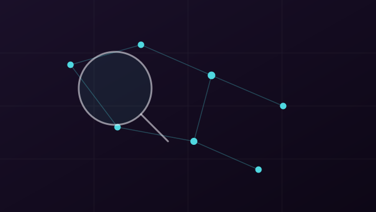
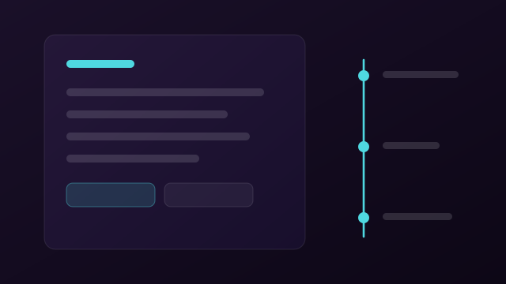
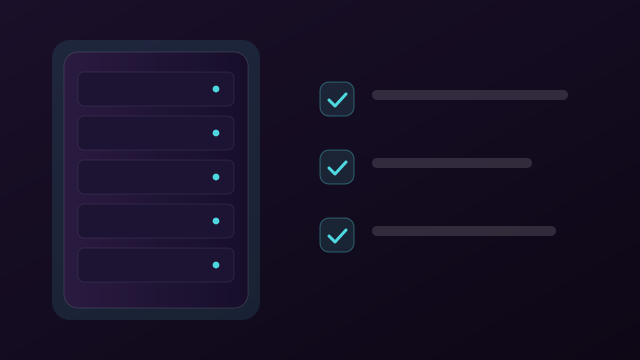

Redes e Wi-Fi corporativo
Cabeamento organizado, cobertura Wi-Fi sem pontos cegos e separação de rede entre equipe, visitantes e equipamentos críticos.
Atendimento consultivo para pequenas e médias empresas de Brasília e do DF: redes, Wi-Fi corporativo, firewall, servidores, backup, VPN, links e failover. Antes de qualquer proposta, um diagnóstico claro do que você já tem.
Foco no que mantém a operação de pé: rede, conectividade, segurança de perímetro e continuidade dos dados.
Cabeamento organizado, cobertura Wi-Fi sem pontos cegos e separação de rede entre equipe, visitantes e equipamentos críticos.
Firewall configurado, com as regras definidas na implantação para reduzir a exposição da rede e controlar o que entra e sai.
Configuração e manutenção de servidores e armazenamento, no local ou em nuvem, para manter os dados estáveis, acessíveis e organizados.
Backup configurado, com a recuperação testada na entrega e um plano simples de retomada, para que uma falha não vire perda de dados.
Acesso remoto seguro por VPN, links de internet redundantes e failover para reduzir o tempo parado quando um link cai.
Atendimento consultivo e direto para resolver, documentar e evitar que os mesmos problemas voltem.

Equipamentos acomodados e cabeamento identificado — manutenção sem adivinhação.

Pontos de acesso posicionados conforme o uso, com rede separada para equipe e visitantes.

Regras de entrada e saída definidas na implantação e segmentos isolados dentro da rede.

Leitura de tráfego, links e serviços para embasar o que vale mudar — e o que não vale.
Da operadora até os dispositivos, cada camada tem uma função — e uma redundância pensada para a operação não parar.
Precisa de uma dessas frentes na sua operação? .
A Olivia Tech é uma consultoria de infraestrutura de TI em Brasília. Atendemos poucos clientes por vez, de perto, com responsabilidade técnica em cada decisão.
Todo projeto começa por um diagnóstico do que você já tem. A partir daí, propomos o que faz sentido para o seu momento — sem excessos e sem vender o que você não precisa.
Com links redundantes e failover, se a conexão principal cai, a reserva assume o tráfego.

Entendemos o cenário atual antes de sugerir qualquer mudança.
Mudanças combinadas antes, documentadas e feitas com o menor risco possível.
Sem jargão desnecessário — você entende o que está sendo feito e por quê.
Depois da entrega, seguimos disponíveis para ajustes e dúvidas, dentro do horário de atendimento.
Um processo simples e conversado do começo ao fim, para você saber o que esperar antes de qualquer mudança na sua operação.

Começamos entendendo o que você já tem: rede, servidores, backup e pontos de risco. Nada muda antes disso.

Você recebe um plano claro do que faz sentido para o seu momento — com prioridades e sem excessos.

Executamos as mudanças combinadas e seguimos disponíveis para ajustes, dentro do horário de atendimento.
O primeiro passo é o diagnóstico — sem compromisso além da conversa.
Atendemos de segunda a sexta a partir das 19h e, aos fins de semana, mediante agendamento. Não é um plantão 24 horas: é uma agenda enxuta, pensada para dar atenção real a cada cliente e conversar com calma sobre a sua operação.

O que costuma passar pela cabeça de quem está pensando em chamar. Ficou outra dúvida? É só perguntar no contato abaixo.
Pequenas e médias empresas de Brasília e do DF que dependem da rede, dos servidores e da internet para funcionar — e que preferem ter alguém cuidando disso com responsabilidade técnica, em vez de resolver no improviso. Como o atendimento é próximo, trabalhamos com poucos clientes por vez.
É. O diagnóstico é um serviço: um levantamento técnico do que você já tem — rede, servidores, backup e pontos de risco — que termina num retrato claro da sua infraestrutura e no que vale a pena priorizar. A conversa inicial para entender sua necessidade e combinar o escopo não tem compromisso; o diagnóstico em si é contratado.
O objetivo é o contrário: manter a operação de pé. As mudanças são combinadas e planejadas antes, e feitas com o menor risco possível — normalmente fora do horário comercial, a partir das 19h ou nos fins de semana, para não interromper o expediente. Se em algum ponto houver risco real de parada, isso é dito com antecedência.
O diagnóstico e a implantação são presenciais, em Brasília e no DF — é onde dá para ver a infraestrutura como ela realmente está. Depois da entrega, o acompanhamento, os ajustes e o suporte podem ser feitos remotamente, conforme o caso.
Os dois, conforme a sua necessidade: pode ser um projeto pontual — uma implantação, uma correção, uma migração — ou um acompanhamento contínuo da infraestrutura. Em qualquer formato, o atendimento acontece a partir das 19h nos dias úteis ou nos fins de semana, sob agenda.
É uma escolha, não uma limitação. A agenda enxuta permite dar atenção real a cada cliente e conversar com calma sobre a sua operação — sem plantão 24 horas e sem prometer uma estrutura que não temos. E trabalhar fora do horário comercial ajuda a mexer na infraestrutura sem parar o seu expediente.
Conte um pouco sobre sua operação e o que está incomodando. Retornamos com os próximos passos dentro do horário de atendimento.
Sua mensagem foi montada e aberta no WhatsApp. Toque em enviar por lá para concluir a solicitação. Se a janela não abriu, use o botão abaixo.
Abrir no WhatsApp